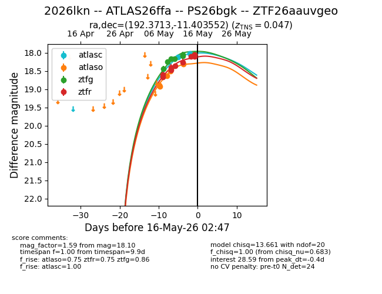
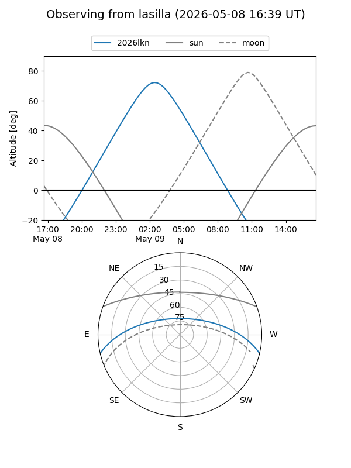
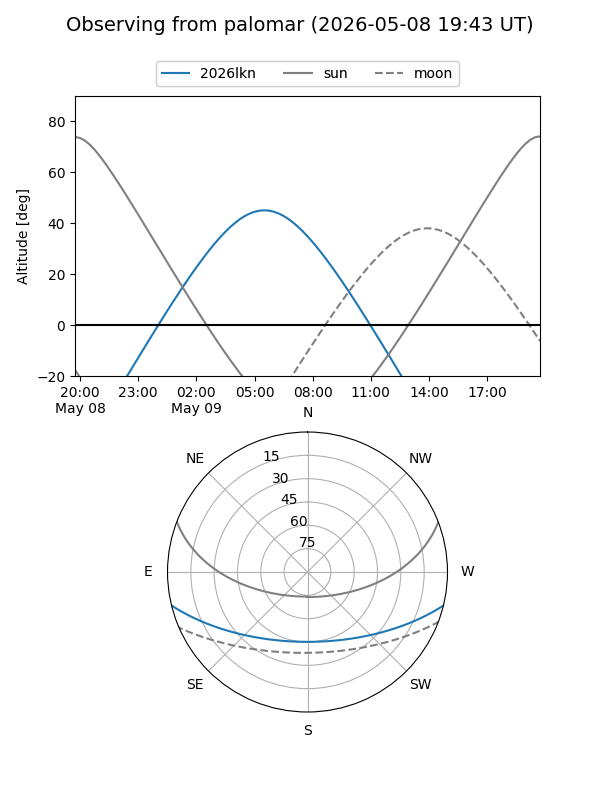
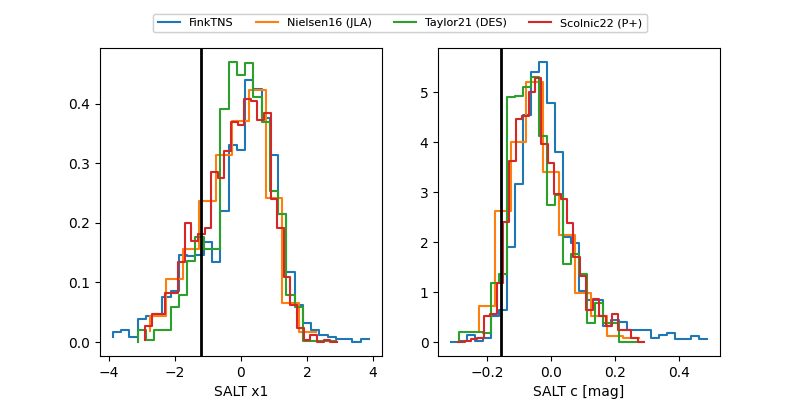

2026lkn
Target 2026lkn at 2026-05-16 02:49
Aliases and brokers:
FINK: link
Lasair: link
ALeRCE: link
TNS: link
YSE: link
alt names
ZTF26aauvgeo (ztf,fink_ztf)
2026lkn (tns,yse)
ATLAS26ffa (atlas)
PS26bgk (panstarrs)
Coordinates:
equatorial (ra, dec) = 192.3713,-11.40355
equatorial (HMS+DMS) = 12:49:29.11,-11:24:12.79
galactic (l, b) = (302.1637,+51.46528)
Flags:
Photometry:
last atlasc=18.02, atlaso=18.32, ztfg=18.04, ztfr=18.10
2 atlasc, 5 atlaso, 8 ztfg, 9 ztfr detections
Lightcurve

Visibility


Additional plots
